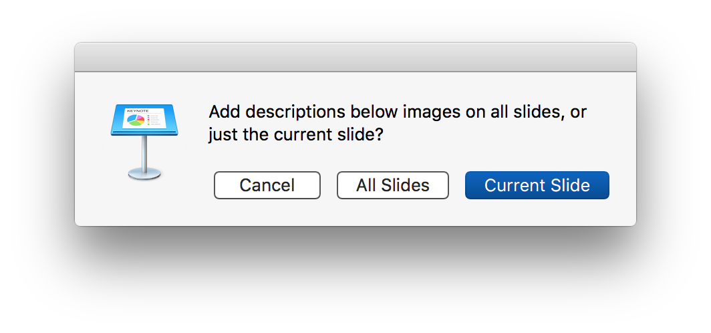
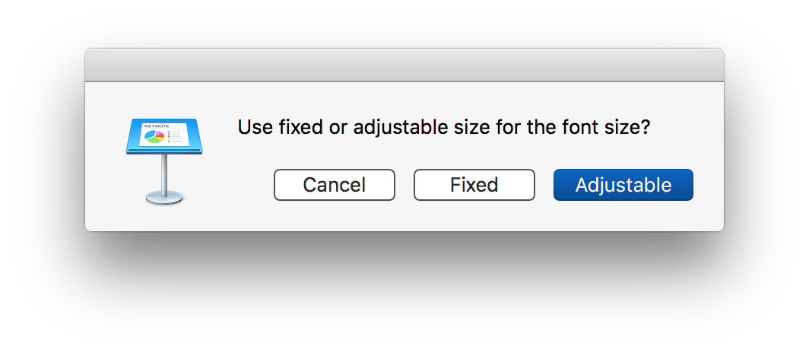
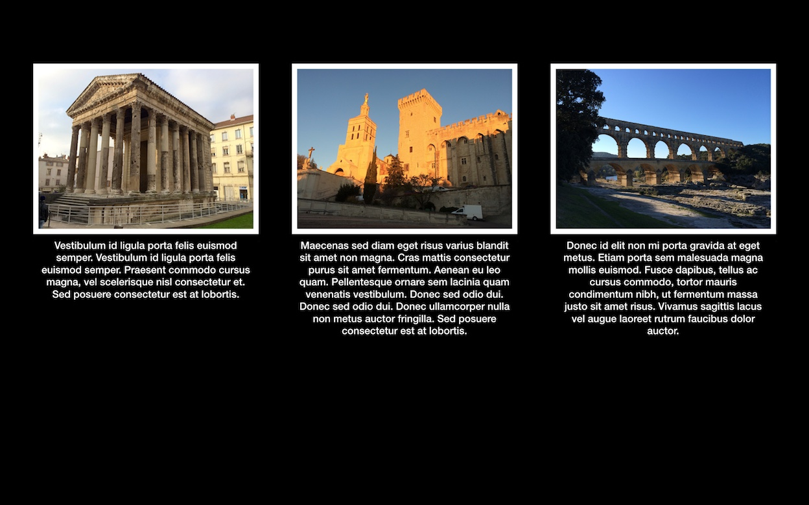

Here are two scripts for adding descriptions over or below images in a Keynote presentation.
Add Descriptions Under Images
This script positions image descriptions below the source image frame. If an image has no description, no text container is added. There are two options for controlling the process:
You can choose to process all images on all slides, or just the images on the current slide.

The font size for the descriptions can be a fixed size or be adjusted based upon the ratio of text length and image width.

Short descriptions:
Long descriptions:

Set the value for the default font family and size properties to suite your requirements.
display dialog "Add descriptions below images on all slides, or just the current slide?" buttons {"Cancel", "All Slides", "Current Slide"} default button 3 with icon 1
20
set targetScope tobutton returnedof the result
21
log ("targetScope: " & targetScope)
22
if the targetScope is "All Slides" then
23
settheseSlidesto everyslidewhose skipped isfalse
24
else
25
settheseSlidesto {}
26
set the end oftheseSlidesto the current slide
27
end if
28
29
display dialog "Use fixed or adjustable size for the font size?" buttons {"Cancel", "Adjustable", "Fixed"} default button 3 with icon 1
30
setfontSizeMethodto thebutton returnedof the result
31
log ("fontSizeMethod: " & fontSizeMethod)
32
33
repeat withifrom 1 to thecountoftheseSlides
34
setthisSlidetoitemioftheseSlides
35
setimageCountto thecountof images ofthisSlide
36
repeat withqfrom 1 to theimageCount
37
setthisImageto image qofthisSlide
38
setthisDescriptionto the description ofthisImage
39
ifthisDescriptionis not "" then
40
copy (myderiveBoundsOfVisibleImageMaskFor(thisImage)) to {x, y, x1, y1}
display dialog "Overlay the description or file name on every image in this presentation?" buttons {"Cancel", "File Name", "Description"} default button 3 with icon 1
14
set chosenMetadata to thebutton returnedof the result
15
log ("chosenMetadata: " & chosenMetadata)
16
display dialog "Overlay descriptions on all slides, or just the current slide?" buttons {"Cancel", "All Slides", "Current Slide"} default button 3 with icon 1
17
set targetScope tobutton returnedof the result
18
log ("targetScope: " & targetScope)
19
if the targetScope is "All Slides" then
20
settheseSlidesto everyslidewhose skipped isfalse
21
else
22
settheseSlidesto {}
23
set the end oftheseSlidesto the current slide of document 1
24
end if
25
display dialog "Use fixed or adjustable size for the font size?" buttons {"Cancel", "Adjustable", "Fixed"} default button 3 with icon 1
26
set fontSizeMethod to thebutton returnedof the result
27
log ("fontSizeMethod: " & fontSizeMethod)
28
tell the frontdocument
29
setdocumentWidthto itswidth
30
setdocumentHeightto itsheight
31
repeat withifrom 1 to thecountoftheseSlides
32
setthisSlidetoitemioftheseSlides
33
setimageCountto thecountof images ofthisSlide
34
repeat withqfrom 1 to theimageCount
35
setthisImagetoimageqofthisSlide
36
if chosenMetadata is "Description" then
37
setthisDescriptionto thedescriptionofthisImage
38
else
39
setthisDescriptionto thefile nameofthisImage
40
end if
41
ifthisDescriptionis not "" then
42
copy (myderiveBoundsOfVisibleImageMaskFor(thisImage)) to {x, y, x1, y1}
Mention of third-party websites and products is for informational purposes only and constitutes neither an endorsement nor a recommendation. MACOSXAUTOMATION.COM assumes no responsibility with regard to the selection, performance or use of information or products found at third-party websites. MACOSXAUTOMATION.COM provides this only as a convenience to our users. MACOSXAUTOMATION.COM has not tested the information found on these sites and makes no representations regarding its accuracy or reliability. There are risks inherent in the use of any information or products found on the Internet, and MACOSXAUTOMATION.COM assumes no responsibility in this regard. Please understand that a third-party site is independent from MACOSXAUTOMATION.COM and that MACOSXAUTOMATION.COM has no control over the content on that website. Please contact the vendor for additional information.